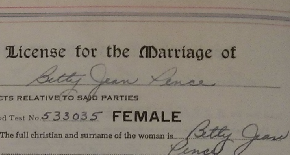

Marriage record of Betty J. Pence and William A. Meyers of Whitley, Indiana in 1944
 Transcript (as well as downloadable PDF) of the marriage record of Betty Jean Pence and William A. Meyers in Whitley, Indiana, United States from 1944.
Citation and File
Marriage of Betty Pence and William Meyers, 7 October 1944, Whitley County Circuit Court; Marriage Application Book 19, page 318; Whitley County File Management Office, 220 West Van Buren Street, Suite Lower Level 2, Columbia City, Indiana, United States. [Image from marriage register book (PDF, 4 MB)]
Transcript
Application is hereby made for a license for the marriage of
William A. Meyers to Betty Jean Pence
upon the following statement of facts relative to said parties
Blood test no. 533034 MALE
1. The full christian and surname of the man is: William A. Meyers
2. Color: Wh (white)
3. Where born: Columbia City
4. When born: 29 Sep 1904
5. Present residence: Columbia City R#2
6. Present occupation: farmer
7. If no occupation, what means has the male contracting party to support a family? (blank)
8. Is the male contracting party of nearer blood kin to the female contracting party than second cousin? No.
9. Full christian and surname of father: William E. Meyers
10. His color: Wh (white)
11. His birthplace: Indiana
12. His occupation: deceased
13. His residence: (blank)
14. Full christian and maiden name of mother: Mary Stouffs
15. Her color: Wh (white)
16. Her occupation: deceased
17. Her birthplace: Indiana
18. Her residence: (blank)
19. Has the male contracting party been an inmate of any county asylum or home for indigent persons within 5 years?: No
20. If so, is he now able to support a family and likely to so continue? (blank)
21. Is this his first marriage?: no
22. If not, how often has he been married?: once
23. Has such prior marriage, or marriages, been dissolved?: yes
24. If so, how?: death
25. When?: 1939
26. Give the names and ages of any minor children of the male applicant from all former marriages: William L. Meyers and Barbara Ann Meyers
27. Are any or all of these children either wholly or partially dependent upon you for support?: yes
State their names: both of them.
28. Are you supporting them and are you complying with all Court Orders issued for their support?: yes
29. Is the male contracting party afflicted with epilepsy, tuberculosis, venereal, or any other contagious or transmissable disease?: no
30. Is he an imbecile, feeble-minded, idiotic or insane, or is he under guardianship as a person of unsound mind?: no
Signature of applicant: William A. Meyers
Blood test no. 533035 FEMALE
1. The full christian and surname of the woman is: Betty Jean Pence
2. Color: Wh (white)
3. Where born: Fort Wayne, Ind.
4. When born: 30 January 1924
5. Present residence: 411 North Main, Columbia City
6. Present occupation: Factory
7. Full christian and surname of father: Heber J. Pence
8. His color: Wh (white)
9. His birthplace: Indiana
10. His occupation: deceased
11. His residence: (blank)
12. Full christian and maiden name of mother: Carrie B. Long
13. Her color: Wh (white)
14. Her occupation: Factory
15. Her birthplace: Churubusco
16. Her residence: Churubusco
17. Has the female contracting party been an inmate of any county asylum or home for indigent persons within 5 years?: No
18. Is this her first marriage?: yes
19. If not, how often has she been married?: (blank)
20. Has such prior marriage, or marriages, been dissolved?: (blank)
21. If so, how?: (blank)
22. When?: (blank)
23. Is the female contracting party afflicted with epilepsy, tuberculosis, venereal, or any other contagious or transmissable disease?: no
30. Is she an imbecile, feeble-minded, idiotic or insane, or is he under guardianship as a person of unsound mind?: no
Signature of applicant: Betty Jean Pence
STATE OF INDIANA, WHITLEY COUNTY, SS:
(blank) deposes and says that (blank) has personal knowledge of the facts above stated and that they and each of them are true.
Subscribed and sworn before me, this 7 day of Oct 1944
Charles H. White
Clerk Whitley Circuit Court.
William A. Meyers to Betty Jean Pence (SS)
STATE OF INDIANA, WHITLEY COUNTY, ss:
BE IT REMEMBERED, That on this 7th day of October, 1944, the Clerk of Whitley Circuit Court issued a MARRIAGE LICENSE, of which the following is a true record, to wit:
THE STATE OF INDIANA TO ANY PERSON EMPOWERED BY LAW TO SOLEMNIZE MARRIAGES, GREETING:
YOU ARE HEREBY AUTHORIZED to join together as HUSBAND AND WIFE
William A. Meyers and Betty Jean Pence
and of this, together with your Certificate of Marriage, make due return within three months, according to the laws of the State of Indiana.
WITNESS Charles H. White, Clerk of our said Whitley Circuit Court, and the Seal thereof, affixed at office in Columbia City on this 7th day of October, A. D. 1944
Charles H. White
Clerk Whitley Circuit Court
BE IT FURTHER REMEMBERED, That afterwards, to wit: on the 21st day of October A. D. 1944, the following Certificate was filed in my office, to wit:
STATE OF INDIANA, WHITLEY COUNTY, SS:
I, Val Hennig, of said County, hereby certify that on the 7th day of October, A. D. 1944, I joined in marriage William A. Meyers and Betty Jean Pence, by authority of law and a license from the Clerk of the Whitley Circuit Court.
Given under my hand, this 7th day of October, A. D. 1944
Val Hennig, Pastor